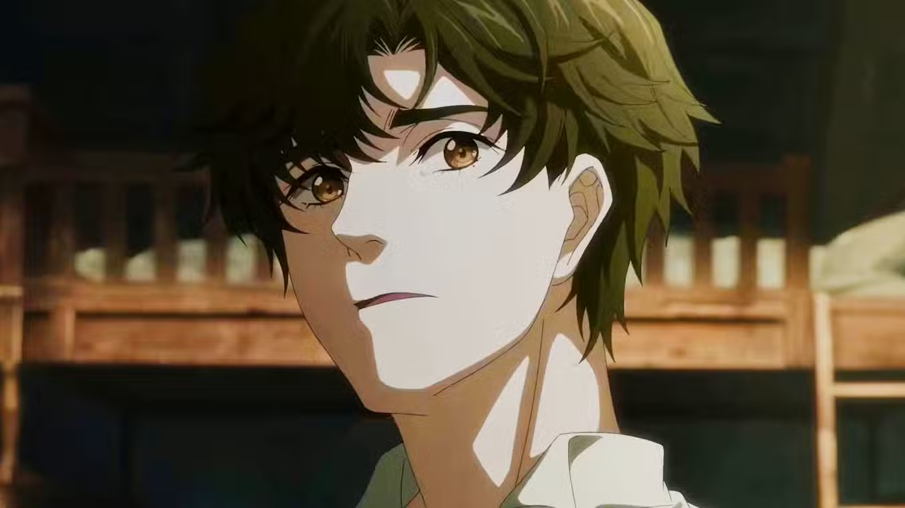
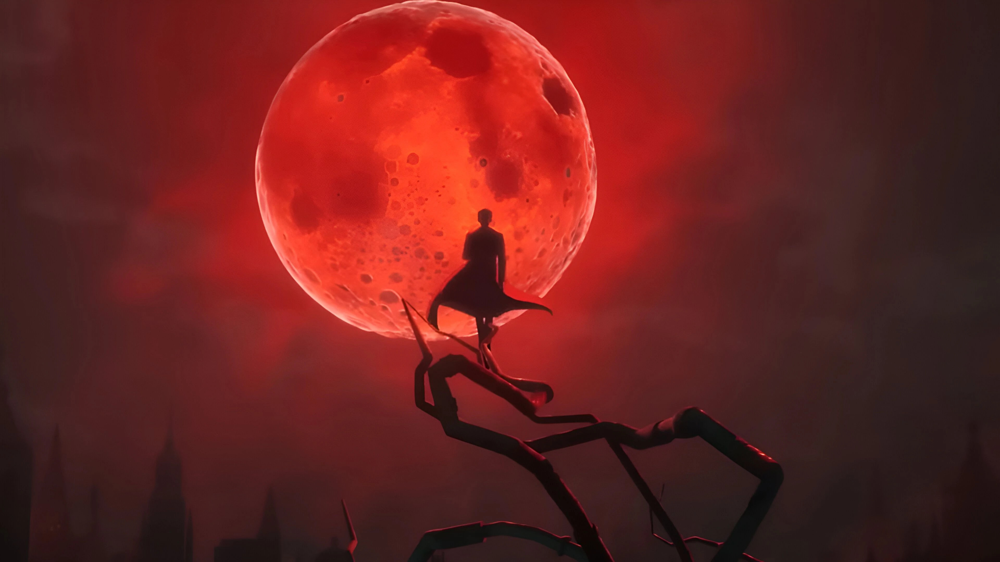
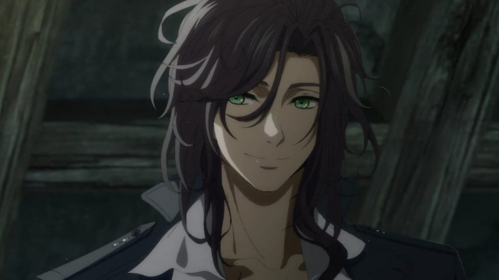
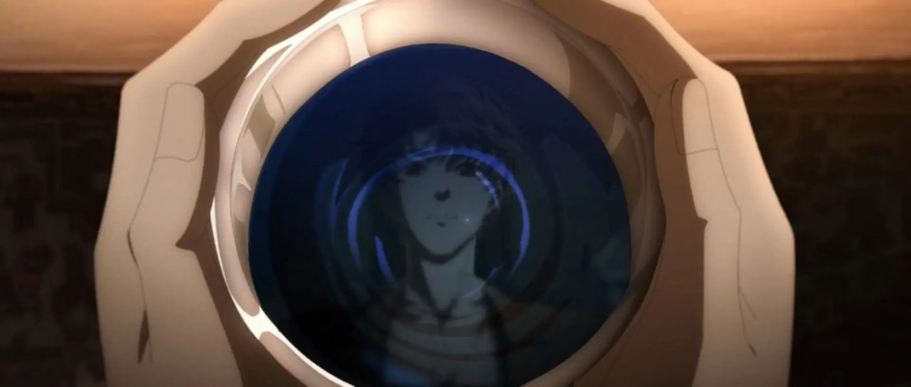

Based on an iconic web novel, this story follows Zhou Mingrui, a young man who wakes up in the body of a university graduate, Klein Moretti.
He finds himself in a steampunk world, reminiscent of Victorian England, and as he gains new powers and faces unspeakable dangers, he has to find a way home.
Popular Searches
Klein Moretti
The World of Lord of Mysteries
Leonard Mitchell
Beyonders
We are guardians, but also a bunch of miserable wretches constantly fighting against threats and madness.
-Dunn Smith
Become a Beyonder!
Sign up now to join the mysterious world of Lord of Mysteries today!